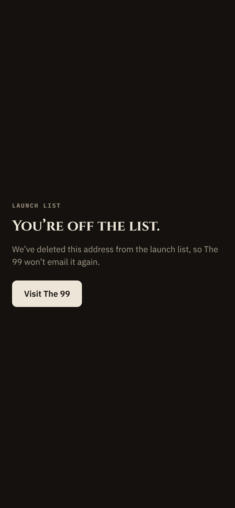
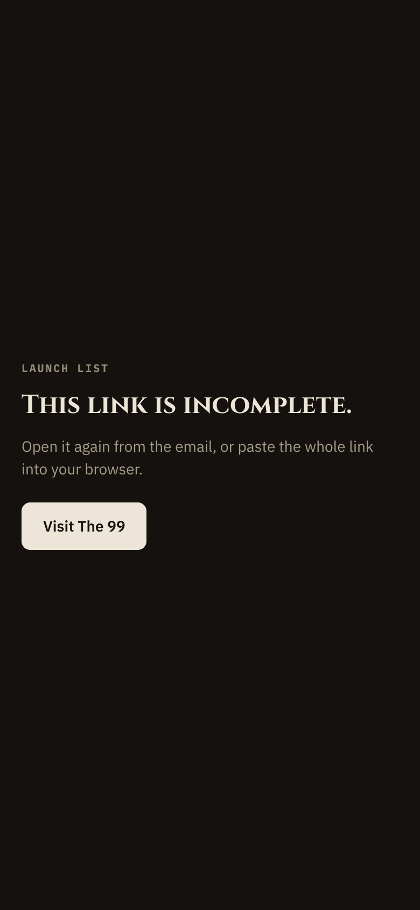
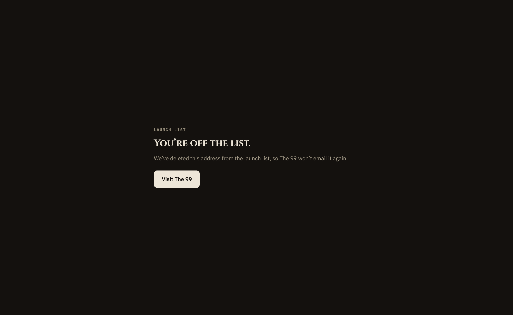
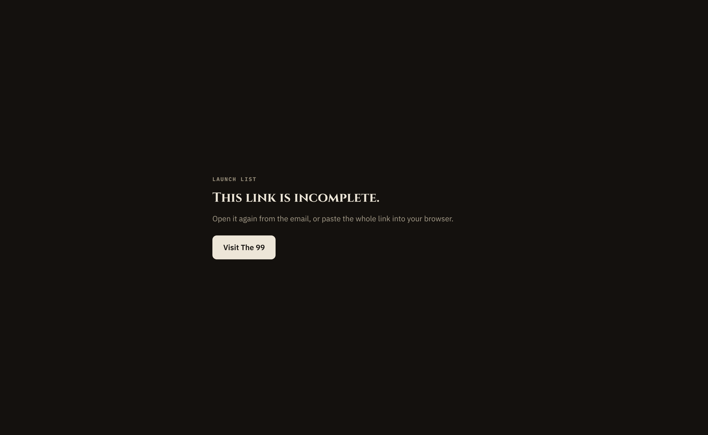

U · /unsubscribe · signed out · no app shell
The shipped offline page’s body, word for word in layout: a 560 column centered on the page, the mono eyebrow, the display title, one sentence in --fg-muted, one PrimaryButton at 44 tall. Default theme (Table Candlelight), since nobody is signed in. No top bar, no tab bar, no footer: nothing to sign in to and nothing to explore from here. The button is the reader’s choice to come back; it goes to /, the landing.

U1 · done · 390

U2 · broken link · 390

U1 · done · desktop 1300

U2 · broken link · desktop 1300
States
U1 · done. The token is good: the row is deleted and this shows. Opened again, or after the list’s purge, the same page: it never says whether an address was listed. Tab title Unsubscribed · The 99.
U2 · broken link. The token fails its check (cut short by a mail client, or edited). “This link is incomplete.” / “Open it again from the email, or paste the whole link into your browser.” Nothing is deleted. Tab title Link incomplete · The 99.
One-click POST from Gmail or Yahoo (G1) does the same delete and draws nothing: those clients show their own confirmation.
No confirm step and no undo. The list sends one email, so an accidental press (or a scanner’s) costs nothing that would come again; the button is the way back.
Copy (DRAFT, /copy-review)
Eyebrow Launch list · U1 You’re off the list. / We’ve deleted this address from the launch list, so The 99 won’t email it again. · U2 This link is incomplete. / Open it again from the email, or paste the whole link into your browser. · button Visit The 99